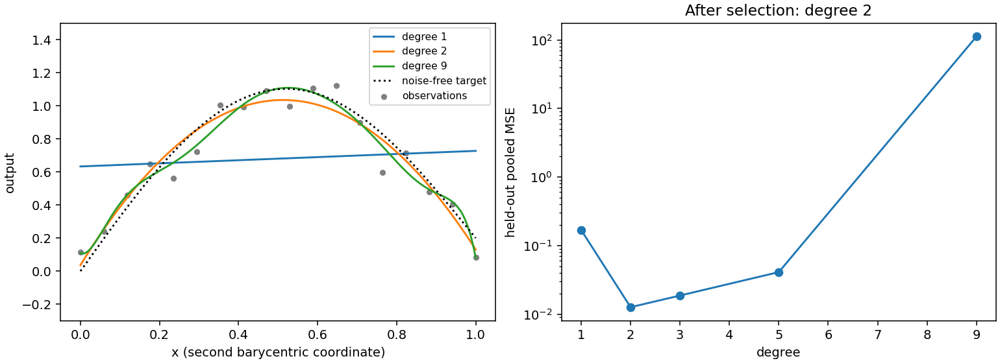

Cross-validation and degree search
When degree selection matters
Polynomial degree controls the flexibility of a Bézier model. A degree-one curve is a straight segment; degree two can represent a quadratic bend; higher degrees permit more complicated variation and introduce more unknown controls. A larger degree often lowers training error even when its predictions between observations get worse. Select degree using observations that were not used to fit the corresponding model.
This is particularly useful when a surrogate will interpolate costly simulator outputs, when the data contain noise, or when one region has much weaker coverage than another. It also gives evidence for retaining a low degree: if higher degrees do not reduce held-out error, additional coefficients and compute cost have little practical justification.
cross_validate evaluates one space. select_degree evaluates an explicit
list of candidate degrees on identical folds. Both retain results rather than
silently converting validation into a fitted ensemble or full-data refit.
Inspect the evidence, choose a degree, and then explicitly train the model
that the application will use.
A reproducible search
This example adds fixed-seed noise to a curved scalar response. The barycentric
inputs [1-x, x] represent a segment rather than two independent features.
The same observations and fold partition are used for all degrees.
import torch
from torch_bsf import BezierSpace, Samples, fit
from torch_bsf.model_selection import KFold, cross_validate, select_degree
x = torch.linspace(0, 1, 18, dtype=torch.float64)
t = torch.stack([1 - x, x], dim=1)
generator = torch.Generator().manual_seed(17)
y = torch.sin(torch.pi * x) + .2 * x
y = y + .1 * torch.randn(18, generator=generator, dtype=torch.float64)
samples = Samples(t, y[:, None])
template = BezierSpace.simplex(1, degree=1)
cv = KFold(n_splits=3, shuffle=True, seed=7)
search = select_degree(template, samples, degrees=[1, 2, 3, 5, 9], cv=cv)
assert search.success
for candidate in search.candidates:
assert candidate.validation.success
assert len(candidate.validation.folds) == 3
chosen = fit(search.best_space, samples).require_success()
assert chosen.model.space.compatible(search.best_space)
Use candidate.degree, candidate.validation.metrics and individual fold
results to produce a report. search.best_degree is the candidate minimizing
held-out pooled_mse among successful candidates. best_space is its
compiled space, not a trained model. If all candidates fail, success is
false and both properties are None. Check success before passing the
selected space to fit.
No early stopping occurs: every requested candidate is evaluated. This makes it possible to discover a later improvement after a mediocre intermediate degree. It also means that a long candidate list has a real cost. Start with a small range and expand only when the best candidate is at its upper boundary and there are enough observations to identify the larger space.
Read the validation evidence
Each FoldResult keeps train_indices, test_indices, the complete
FitResult, held-out mse and mae, and total held-out observation weight.
Every observation appears in one test fold. The test targets do not participate
in that fold’s numerical solve. A failed solve remains visible and makes that
candidate ineligible; it is never omitted from an apparently successful mean.
The reported metrics answer different questions:
Metric |
Interpretation |
|---|---|
|
Arithmetic mean of fold MSEs. Every fold contributes equally. |
|
Population standard deviation of fold MSEs. Large values flag unstable partitions. |
|
Fold MSEs weighted by their held-out weight sums. This is the selection criterion. |
Fold |
Weighted absolute error, averaged over output coordinates; useful beside squared error. |
With unequal fold sizes or unequal observation weights, mean_mse and
pooled_mse need not match. Output columns are averaged equally in their
current units. A large-scale output may dominate both; inspect per-output
errors separately if the application has different tolerances per response.
A small average can conceal unacceptable error near an endpoint or boundary.
Plot residuals against parameter position as well as comparing summary errors.


Fig. 11 Before selection: degree one underfits the curved target, while degree nine introduces unnecessary flexibility. After selection: refit the degree with the smallest pooled three-fold error. The target and data are identical across curves. Right: candidate errors on a logarithmic scale.
The figure uses the example’s 18 observations, noise seed 17 and fold seed 7.
Reproduce it with python examples/generate_guide_figures.py. The generated
metrics JSON retains every candidate
error. This synthetic comparison illustrates the workflow; its chosen degree
is not a universal default for other responses or sample counts.
Tune candidates and folds
Increasing degree increases controls combinatorially with domain dimension.
A degree \(d\) simplex of dimension \(a\) has
\(\binom{a+d}{d}\) controls. A product has the product of these counts over
factors. Check space.n_controls before requesting a large search. A cubic
triangle has ten controls; a cubic segment has four. The same number of
observations therefore supports very different searches on those domains.
Increasing KFold.n_splits fits more models per candidate. Each training set
contains a larger fraction of observations, while each test set becomes smaller
and may provide a noisier local estimate. Three to five folds are often a
reasonable first experiment, provided each training fold has positive weight
and sufficient coverage. The requested split count must be at least two and
cannot exceed the number of observations. A fold with zero total train or test
weight is invalid; it does not become a zero-error fold.
shuffle=True randomizes indices with a local generator. seed fixes that
partition for reproducibility; it does not change the regression solver’s
precision. shuffle=False makes contiguous test blocks in input row order.
This can test interpolation gaps when rows are spatially sorted, but is not
an automatic time-series or grouped validation scheme. For correlated repeated
measurements, independent random folds can be optimistic. Construct a separate
evaluation protocol reflecting the future prediction task instead of reporting
random-fold error as evidence for extrapolation or unseen experimental groups.
For a product space, provide degree tuples such as [(1, 1), (2, 1), (2, 2)].
Increasing one factor degree adds flexibility along that factor. Keep factor
order consistent with concatenated barycentric blocks. A tuple must match the
number of factors. Degree search calls space.with_degree; use manually
constructed compatible candidate spaces and explicit validation when changing
topology or specifying different cellwise degree assignments.
Penalties and final deployment
Use the same penalty and solver in candidate evaluation and the final
refit. A degree chosen with strong smoothness is not evidence for an
unregularized fit of that degree. To compare several penalty weights, run
separate searches with the same KFold settings and record all trials.
Avoid repeatedly tuning against the final test set; retain untouched data for
an honest final evaluation if the choice matters operationally.
cross_validate also accepts fixed for evaluating one space with exact
controls. select_degree does not take fixed controls, because a global row
number may mean a different coefficient at a different degree. For a constrained
degree search, build each space, resolve its endpoint or face indices anew,
and call cross_validate explicitly with the corresponding constraints.
The final full-data model generally differs from every fold model because it
uses more observations. Recheck numerical status and inspect errors after
refitting. If you want an ensemble instead, explicitly construct
Ensemble(validation.models) from a single compatible space; see
Explicit ensembles and active learning. Save the chosen model with io.save_model and record
the candidate list, weights, fold settings and errors alongside it. Persistence
of model geometry does not by itself preserve the reasoning behind selection.
Non-finite validation metrics
Cross-validation excludes zero-weight held-out rows before evaluating metrics.
Weighted errors combine mantissas and exponents before reduction to avoid
intermediate overflow and preserve meaningful tiny normalized weights.
Near the float64 overflow or subnormal boundaries, row contributions are
combined with exact rational arithmetic on the CPU and rounded only once.
The pooled average uses an exact rational reduction of the CPU scalar fold
summaries before rounding once to float64. This preserves tiny fold weights
and the bound that the average lies between the finite fold errors, including
at the float64 maximum; its scalar work grows with the number of folds.
If a fold or aggregate metric is still non-finite, success is
False and every fold remains available for inspection. Degree selection
excludes that candidate; if all candidates fail, best_index is None
and success is False. Successful training alone does not certify that
held-out errors can be represented in float64. Rescale outputs or investigate
failed candidates before explicitly refitting a selected space.